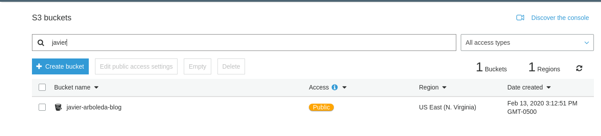

Hi there! I am Javier, and in this moments, I am being part of the Udacity’s Bertelsmann Technology Scholarship Cloud Track Challenge Course.
During this course, one of the proposed activities was to write a blog post about one of the course topics and host it over AWS S3.
Therefore, in order to complete this task and share with anybody who could be interested in do it, following, I am detailing the steps that I did take in order to achieve the goal, and I would like to advice you to follow these in order to complete this challenge you too.
My purpose is that other people can be inspired and encouraged to complete these tasks, so they can host their own blog, professional, personal or portfolio website.
Before start, I will mention that for this tutorial, I am using several of the things we have seen through the course and specially some GIT topics. Are not very advanced topics, but those necessary to achieve the goal.
So, Do you want to know how to get your own blog over AWS S3?
Let's get started!
Phase 1 - Getting and preparing our Blog
I want to remind you that this is all about a static blog, so the first thing we are going to need is to have a blog and its content, which we will host after on our AWS S3 bucket.
You could choose between several options to get this job done. But for our purposes (Hosting on AWS S3), I will place here what I think are two main:
1. To use your skills and to program this from scratch or
2. To use a template.
Of course, the first one is funny and you can learn a lot, but the second is also funny, and you have some of the work done in advance, which is good so you can concentrate in the content, and also to code a little in order to get your blog looking as you want.
So, no more words to say I am going to explain you by using the second one.
I got this excelent (in my oppinion) blog template called Clean Blog totally by free from https://startbootstrap.com/.
Again, you have two options:
1. You can download it or
2. Fork it from the Star Bootstrap GitHub repo.
Maybe at first, the easier choice could seem just to download the code, make changes and jump to the AWS S3 bucket subject. But let me advice you to keep your blog code into a GIT repository. In this way you can have both: all the advantages or code versioning systems and also to practice a little what you have learnt so far!
Well... the first thing I did was to fork my own version of the Star Bootstrap repo on GitHub, so I am able to push changes.
After that, I cloned locally:
$ git clone git@github.com:javarb/startbootstrap-clean-blog.git
And created the branch udacity-bertelsmann-scholarship-blog-challenge, in order to push my changes to that branch and not to master:
$ git checkout -b udacity-bertelsmann-scholarship-blog-challenge
At this point, you will have the source code in place, and you will edit your blog content using your favorite code editor. I would advise you to use Visual Studio Code editor.
When you need high quality images, you can go to a free photo bank such as Unsplash, where you can get high resolution photos by free (remember to give credit to the photographers!)
Remeber to commit small portions of code and to write descriptive commit messages, in order the commit history be easily trackeable both, by yourself and by others who could be working with you. And even if this could not be your case right now, you will acquire experience doing the things in the correct way.
So after some changes, your fork should look similar to mine:
Phase 2 - Launching on AWS S3
Now we are close of our objective, huh?
In really this part is easier thanks to the AWS guide to setting up a Static Website
The first thing we do is to login in our console, go to S3 section of your AWS control panel and select to create a S3 bucket. After that, choose a descriptive name for your bucket and select the region where it will dwell:

Click on next and leave the default options values and click on next again.
After it, we see the 'Set permissions' screen, so here we need to disabling the all public access default blockage (since we want everybody can se our blog):
Click on next, review the summary information and click on 'Create bucket':

Now, after that your bucket has been created, it feels like we are really close to reach our goal!

And that is true, but we still have some few important steps to do in order our website content be publicly available.
One thing we need to do, is to make this bucket a web site hosting bucket. For that, we click on our bucket name and under the 'Properties' tab, we click over 'Static website Hosting' card and then we need to provide our index document name. Then you click on save:
Note: Remember that in this card you can find your endpoint name (you will need it after to access your site)
We need also to set the bucket policy, so all people can access its content from the internet. For this, you need go to the 'Permissions' tab of your bucket and add this content on the Bucket policy editor:
{
"Version":"2012-10-17",
"Statement":[{
"Sid":"PublicReadForGetBucketObjects",
"Effect":"Allow",
"Principal": "*",
"Action":["s3:GetObject"],
"Resource":["arn:aws:s3:::your-bucket-name/*"]
}]
}
You must to replace 'your-bucket-name' with the name of your bucket. For example, my configuration looks like this:
After you click save, you can see how your bucket has become public now:

With these steps we have completed the required configurations. And now, is time to upload our blog website content!
For that, go to 'Overview', click on 'Upload' and just drag and drop your project files like so:

Do you remember about your endpoint name? Well, you will use it now to access your blog! You can find it under the 'Properties' tab, and clicking on the 'Static website hosting' card. For example, mine is:
You can find it under the 'Properties' tab, and clicking on the 'Static website hosting' card. For example, the mine is:
http://javier-arboleda-blog.s3-website-us-east-1.amazonaws.com - here is where you are now dude!
FYI: This name is composed of your bucket name and the AWS regional S3 URL endpoint. So, since I configured my bucket to be located on US East (N. Virginia), the corresponding region endpoint is 's3-website-us-east-1.amazonaws.com'. A complete list of regional endpoints can be found here.
Thus, if all is going well, now you are seeing your new blog!
Note: Sometimes this could take a little while receiving answer from the bucket, but must not be much.
Remember that always that you need to make changes, just drag and drop replacing needed files in the bucket and done!
Now you know how to create a static blog/website on AWS S3.
If you want your website have your own domain name, you will have to rent it from a registar such as Godaddy, Hostgator, etc., and make it to point to your AWS S3 endpoint.
I hope you have enjoyed reading and following my instructions, as much as I enjoyed writing them!
See this same post on Medium